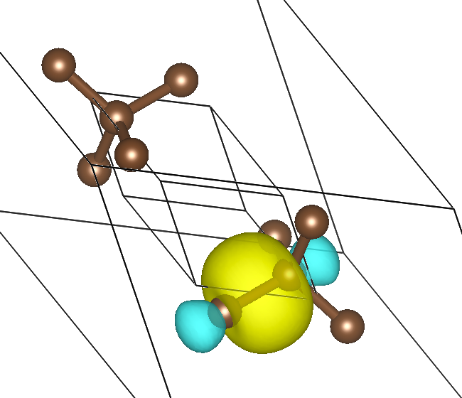

ABACUS+Wannier90 使用教程
作者：刘人熙，邮箱：rxliu@stu.pku.edu.cn
审核：陈默涵，邮箱：mohanchen@pku.edu.cn
最后更新时间：2023/11/09
教程使用说明
Wannier 函数是周期性晶格势场中局域表象下的波函数，Wannier 函数在 1937 年由 Gregory H. Wannier 提出，它可以通过傅立叶变换和布洛赫波函数互相转换。Wannier 函数对于理解半导体、过渡金属、分子晶体等价电子局域程度比较高的凝聚态系统有重要帮助，因而在物理中有广泛的应用。
在 ABACUS 等密度泛函理论（Density Functional Theory，简称 DFT）软件中，单电子近似下的布洛赫波函数可以通过自洽迭代求解 Kohn-Sham 方程得到。但是布洛赫波函数存在规范不确定性，进而导致 Wannier 函数[1-4]也不是唯一的。1997 年到 2001 年间，Nicola Marzari、David Vanderbilt 和 Ivo Souza 等人发展了最大局域化的 Wannier 函数（Maximally localized Wannier function, 简称 MLWF）的方法[1,2,4]，提出可以通过优化 Wannier 表象下的电子位置的方差（即 spread 函数）来确定一个规范，在该规范下 Wannier 函数是最局域的；该方法可以在 DFT 电子结构计算完之后以后处理的方式实现计算 MLWF。2008 年，用于产生 MLWF 的 Wannier90 软件发布，并在随后几年获得了广泛的应用。
本教程分为两部分，第一部分 最大局域化 Wannier 函数方法简介 介绍最大局域化 Wannier 函数的算法，主要介绍 1997 年和 2001 年的两篇 PRB 文章中提出的优化算法，侧重物理与算法原理；第二部分即本文档，是 Wannier90 软件的 ABACUS 接口说明，主要介绍如何使用 ABACUS 计算 Wannier90 需要的输入文件，侧重具体软件使用。
一、Wannier90 软件介绍
Wannier90 软件[5-7]是 Arash A. Mostofi 同 Marzari、Vanderbilt 等人在 2008 年写的做 Wannier 函数最局域化的 Fortran 语言写成的软件，目前是做 Wannier 函数最局域化的主流软件。在 Wannier 函数方面，Wannier90 软件可以输出 Wannier 函数的中心（负电中心），也可以画出 Wannier 函数的等值面图像。除了做 Wannier 函数相关的计算，Wannier90 还具有计算能带与态密度、Berry Phase、输运性质等方面的功能，程序的下载和使用方法可以参考其官网：Wannier90。
二、使用 ABACUS 准备 Wannier90 需要的文件
目前的 ABACUS 平面波基组功能支持 Wannier90 接口，LCAO 的接口还在完善中。
使用 Wannier90 接口不需要编译 ABACUS 过程中做额外操作。
1. ABACUS 软件的输入参数解释
| 参数名 | 默认值 | 变量类型 | 参数解释 |
|---|---|---|---|
| towannier90 | 0 | bool | 是否打开 Wannier90 接口的计算功能 |
| nnkpfile | seedname.nnkp | string | Wannier90 产生的 nnkp 文件的路径，nnkp 文件包含了 k 点邻居关系等计算 mmn 和 amn 文件必要的信息。 |
| wannier_spin | up | string | 输出向上/向下的波函数及其内积 |
| out_wannier_mmn | 1 | bool | 是否输出 mmn 文件，mmn 文件存储了$M_{mn}^{\mathbf{k,b}}$，即布洛赫波函数之间的内积。mmn 文件在计算 Wannier 最局域化时必须输出。 |
| out_wannier_amn | 1 | bool | 是否输出 amn 文件，amn 文件存储了$A_{mn}$，即初猜的 Wannier 函数和布洛赫波函数之间的内积。在 Wannier 最局域化计算中最好有该文件（可以加快优化迭代的收敛），也可以没有。 |
| out_wannier_eig | 1 | bool | 是否输出 eig 文件，eig 文件存储了各个 k 点、各个能带的本征能量。在计算输出能带时需要输出，如果不需要输出能带则不需要输出该文件。 |
| out_wannier_unk | 1 | bool | 是否输出 UNK 文件，UNK 文件存储了布洛赫波函数$u_{n\mathbf{k}}$。计算 Wannier 函数最局域化，输出 Wannier 函数的中心和 spread 不需要波函数信息。只有画 Wannier 函数图像时需要 UNK 文件。 |
| out_wannier_wvfn_formatted | 1 | bool | 输出的 UNK 文件是否是文本文件。非文本文件即二进制文件，输出速度会比文本文件快很多。 |
在运行 ABACUS+wannier90 程序前，需要准备自洽计算（SCF）的输入文件、非自洽计算（NSCF）的输入文件和 Wannier90 的输入文件，ABACUS 的输入文件有如下注意事项：
- 自洽计算：需要注意
INPUT中一定要指定out_chg参数为 1，即输出电荷密度，以供给非自洽计算计算使用； - 非自洽计算：需要注意 INPUT 中需要把
init_charge参数设置为file，即读取文件中的电荷密度；一定要指定towannier90参数为 1，同时指定nnkpfile参数为 Wannier90 产生的 nnkp 文件的地址；另外需要注意KPT文件中的布里渊区k点要和 Wannier90 输入文件中的k点一模一样，所以最好手动输入 K 点坐标指定； - 非自洽计算：INPUT 中有
out_wannier_mmn、out_wannier_amn、out_wannier_eig、out_wannier_unk、out_wannier_wvfn_formatted五个控制 Wannier90 相关文件输出的参数，默认值都是 1，其中out_wannier_eig和out_wannier_mmn是必须打开的，out_wannier_unk和out_wannier_amn在需要使用 Wannier90 绘制波函数图时需要打开，out_wannier_wvfn_formatted控制输出的 UNK 文件是文本文件还是二进制文件，输出文本文件的时间成本和存储空间都会比较大，输出二进制文件的时间开销和存储开销则会相对较小。
2. 运行流程
这里给出了运行 ABACUS+wannier90 的一个脚本文件，结合 examples/interface_wannier90/ 中的例子讲解结合 ABACUS 和 Wannier90 计算最局域化 Wannier 函数的完整运行流程，这里的流程对平面波基组和原子轨道基组均适用，原子轨道基组的 NSCF 会比平面波基组慢一些。
export W90=wannier90.x
export ABACUS=abacus
export NP=12
# 1. 运行Wannier90软件，生成nnkp文件；
cd wannier
mpirun -np $NP $W90 -pp diamond.win
# 2. 运行ABACUS软件，执行电子结构的自洽计算；
cd ../ABACUS
cp INPUT-scf INPUT
cp KPT-scf KPT
mpirun -np $NP $ABACUS >> scf.out
# 3. 将nnkp文件放在ABACUS的非自洽计算的INPUT文件中指定的位置，运行ABACUS软件，执行非自洽计算；
cp ../wannier/diamond.nnkp .
cp INPUT-nscf INPUT
cp KPT-nscf KPT
mpirun -np $NP $ABACUS >> nscf.out
# 4. 将非自洽计算生成的Wannier90所需要的文件（mmn、amn、eig、UNK）放在Wannier90的运行路径下，运行Wannier90软件。
cd ../wannier
cp ../ABACUS/OUT.ABACUS/diamond.amn ../ABACUS/OUT.ABACUS/diamond.mmn ../ABACUS/OUT.ABACUS/diamond.eig ../ABACUS/OUT.ABACUS/UNK* .
mpirun -np $NP $W90 diamond.win
在这个例子中，Wannier90 的输入文件 diamond.win 中指定要求画出 Wannier 函数的图像，运行结束之后会得到 diamond_0000[1-4].xsf 四个文件，存有 Wannier 函数的实空间格点数值，放在 VESTA 中可以画出如下图的 Wannier 函数的等值面。

3. 运行时间参考
由于 Wannier90 接口只涉及上述步骤中的 NSCF 计算，所以这里只提供 NSCF 部分的时间统计。
在 12 个 CPU（型号：Intel(R) Xeon(R) Bronze 3104 CPU @ 1.70GHz）上并行运行样例，UNK 文件采用二进制格式输出，平面波基组耗时 4 秒，原子轨道基组耗时 98 秒。
4. 样例文件
下载地址为（国内 gitee）：
https://gitee.com/mcresearch/abacus-user-guide/tree/master/examples/interface_Wannier90
三、参考文献
- Nicola Marzari, Arash A. Mostofi, Jonathan R. Yates, Ivo Souza, and David Vanderbilt, Maximally localized Wannier functions: Theory and applications, Rev. Mod. Phys. 84, 1419 (2012). （关于最大局域化 Wannier 函数的综述文献）
- Nicola Marzari and David Vanderbilt, Maximally localized generalized Wannier functions for composite energy bands, Phys. Rev. B 56, 12847 (1997). （提出最大局域化 Wannier 函数方法的文献）
- Blount, E. I., Solid State Phys. 13, 305 (1962). （关于 Bloch 状态的诸多基础性质的讨论，最大局域化中$\langle n\mathbf{R}|\mathbf{r}|m\mathbf{0}\rangle$在布洛赫表象下的表达式来源于此）
- Ivo Souza, Nicola Marzari, and David Vanderbilt, Maximally localized generalized Wannier functions for entangled energy bands, Phys. Rev. B 65, 035109 (2001). （从纠缠能带中解耦出部分能带，做最大局域化 Wannier 函数的文献）
- Arash A. Mostofi, Jonathan R. Yates, Young-Su Lee, Ivo Souza, David Vanderbilt, Nicola Marzari, wannier90: A tool for obtaining maximally-localised Wannier functions, Comput. Phys. Commun., 178, 9, 685 (2008). (发布 Wannier90 软件的文献)
- Giovanni Pizzi et al. Wannier90 as a community code: new features and applications. J. Phys.: Condens. Matter, 32, 165902 (2020). (Wannier90 软件近期的更新)
- ABACUS 的 Wannier90 接口的英文文档：Wannier90 ‒ ABACUS documentation